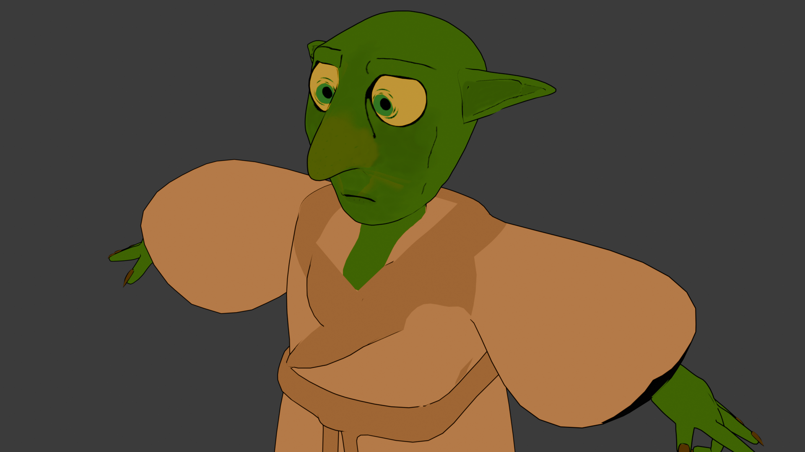
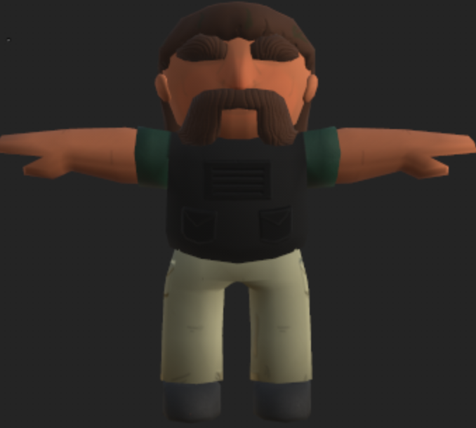
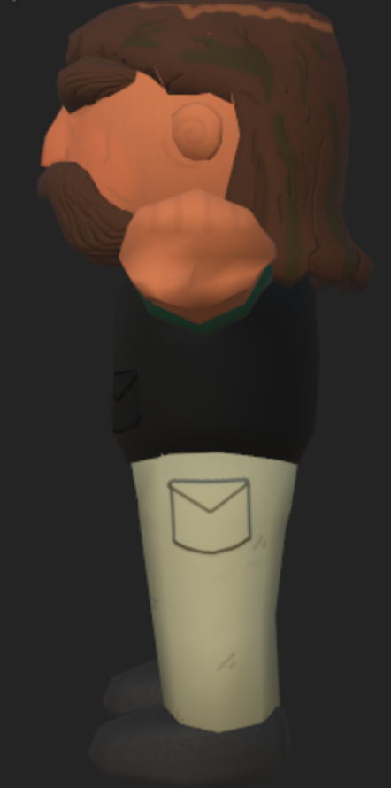
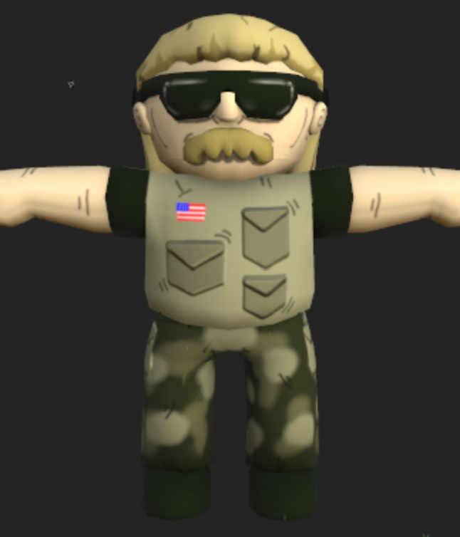
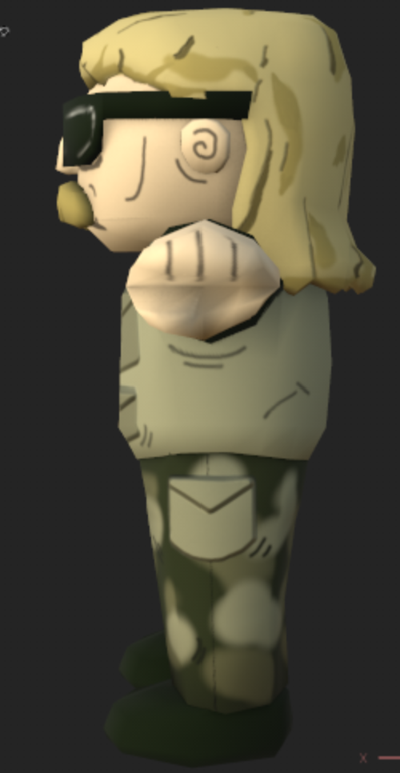
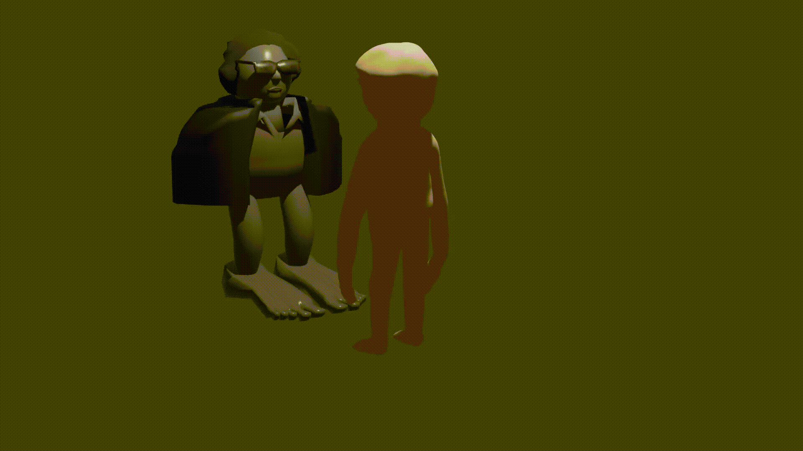
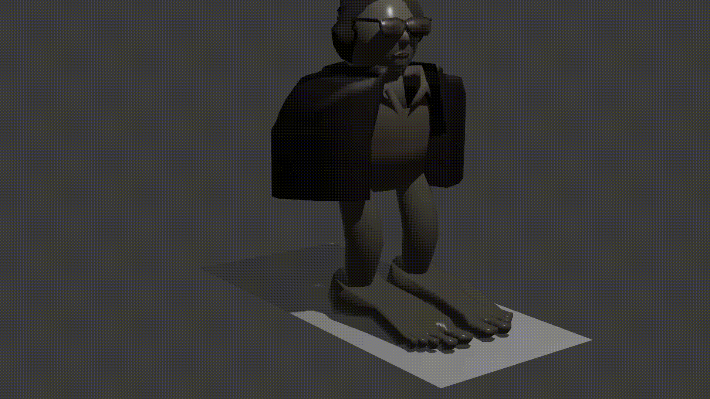
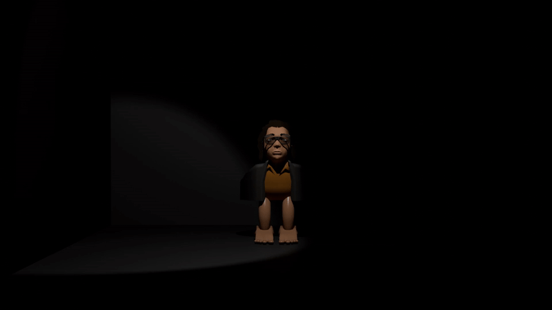

Models:

This was some practice based on political figure Steven Cheung. I was trying to see how few poligons I could make something while still having it look decent. It was mainly a practice with substance painter after I found out that NJIT students get to use it for free, but I was pretty happy with it.

This is a little model I made as an experiment in trying to make 3d look a bit more 2d. I was really happy with how it turned out, but I haven't done anything with it yet. I'm trying to learn to be a bit better at animation with simpler tasks before I do anything more with this character.


This is the first enemy I made in my larger group project Gods n' Guns. I made it based on concept art from a much more experienced artist, and all together it was a very valuable experience. I learned a lot about working on artistic projects in groups, as well as harder skills like texturing.


This is the second enemy I made for Gods n' Guns. As you can see, this it's same model but with a different texture to save on time. You can see a pretty decent improvement on the texturing here as I had a chance to practice in substance painter a lot more between the 2 enemies. It took me a lot less time, but I think I prefer the look of this second enemy.
Animations:
Gifs:

filler

filler
